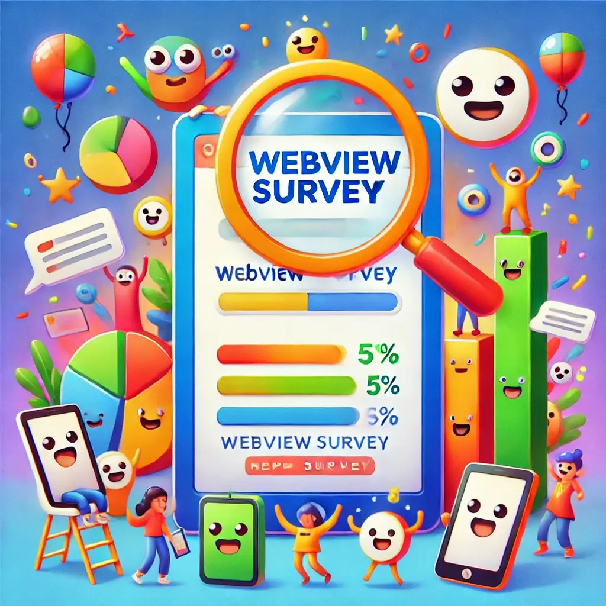
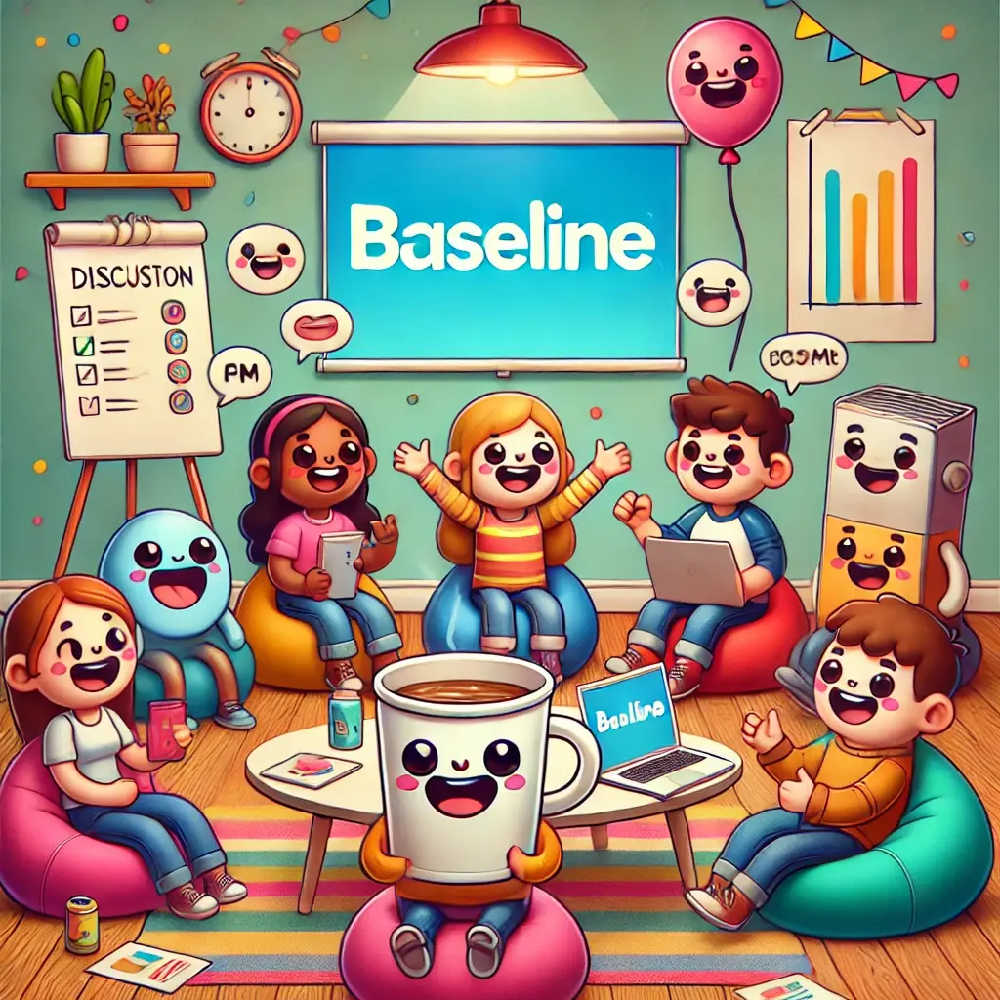

Leaving slide mode.
WebView CG
TPAC 2024
Anaheim CA, USA
hybrid meeting
23–27 SEPTEMBER 2024
Agenda
Intros & admin (5 mins)
A. Discuss Surveys
(40 mins)
Review results from short survey
Review plan for long survey
B. WebViews in baseline
(40 mins)
Review WebViews in BCD & caniuse + caniwebview
Review constraints for adding WebView to baseline
Intros & Admin (5 mins)
Notes link:
bit.ly/webview-cg-tpac-2024
Please add your your name to queue
When speaking, please first announce your name and affiliation
Group survey results (40 mins)

Review results from short survey
Review plan for long survey
Short break (5 min)
WebViews in baseline (40 mins)

What is baseline?
Review WebViews in BCD & caniuse + caniwebview
Review constraints for adding WebView to baseline
Thank you!
Next meeting on Thursday:
State of WebViews report
Open discussion